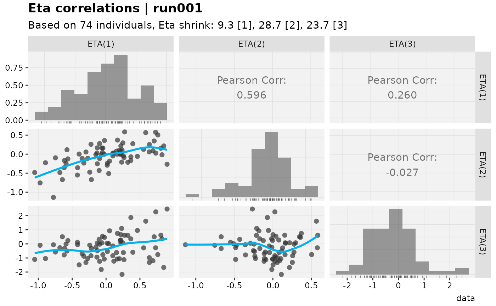

Sets xpdb$normalize_etas, a top-level slot (alongside eg $covs, see
add_cov_association()) consumed by eta_grid()/
eta_vs_cov_grid()/eta_vs_contcov()/eta_vs_catcov(): each
selected eta is divided by its typical scale – by default the standard
deviation implied by its associated diagonal omega estimate
(sqrt(omega)), same as recalc_shk() uses – before being plotted,
so etas modeled on very different scales (eg a normally-distributed eta
next to a log-normal one with a much larger omega) can be compared on
one shared plot without the larger-scale eta dominating.
normalise_etas() is an alias, for the British/rest-of-world spelling.
Usage
normalize_etas(
xpdb,
...,
.use_sd = FALSE,
.problem = NULL,
.subprob = NULL,
.method = NULL,
quiet
)
normalise_etas(
xpdb,
...,
.use_sd = FALSE,
.problem = NULL,
.subprob = NULL,
.method = NULL,
quiet
)Arguments
- xpdb
<
xpose_dataxpose::xpose_data> orxp_xtrasobject- ...
<
tidyselect> Which eta column(s) to (re)compute a normalization factor for. Defaults to everyetacolumn for.problem.- .use_sd
<
logical> IfTRUE, normalize by the empirical standard deviation of each eta's individual estimates instead of the omega-implied one; see Details. Defaults toFALSE.- .problem
<
numeric> Problem number to use. Uses the xpose default if not provided.- .subprob
<
numeric> Subproblem number to use. Uses the xpose default if not provided.- .method
<
character> Method to use. Uses the xpose default if not provided.- quiet
<
logical> Silence extra debugging output
Value
xp_xtras object, with the computed factors set under
$normalize_etas (not $options – see Details)
Details
This only ever affects how those four plotting functions display
etas – it never modifies xpdb$data, so get_data()
and every other consumer of the eta columns keep seeing the raw
(unnormalized) values.
$normalize_etas is a plain top-level slot rather than an xpdb$options
entry – unlike most options, its value is one number per eta rather
than a single setting, and folding a handful of high-precision numbers
per eta into print.xpose_data()'s single-line Options: summary
made that summary unreadable for models with more than a couple of
etas.
The default (omega-based) scale relies on the same internal
name/numbering match between eta columns and diagonal omega estimates
(see recalc_shk()'s Details for when that can fail, eg unconventional
eta naming that isn't a nlmixr2-style direct match to a parameter
table name and also doesn't follow NONMEM's ETA<k>/ETA(k)
numbering). When that match fails, or there simply is no reliable
omega for these etas (eg a hand-built or simulated xpdb),
.use_sd = TRUE sidesteps it entirely, scaling by the empirical
standard deviation of each eta's own individual estimates instead –
at the cost of that scale itself being sample-dependent (and shrinkage-
deflated) rather than reflecting the model's estimated random-effect
variance.
Calling normalize_etas() again merges into (rather than replacing)
any previously-set factors, via utils::modifyList() – so ... can
be used to (re)compute just a subset of etas, eg after refitting. To
turn normalization off again, assign directly: xpdb$normalize_etas$ETA1 <- NULL for a single eta, or xpdb$normalize_etas <- NULL for all of
them.
See also
recalc_shk(), which uses the same omega-matching logic
Examples
xpdb_norm <- normalize_etas(xpdb_x)
eta_grid(xpdb_norm)
#> Using data from $prob no.1
#> Removing duplicated rows based on: ID
#> Using data from $prob no.1
#> Removing duplicated rows based on: ID
#> Using data from $prob no.1
#> Removing duplicated rows based on: ID
#> Using data from $prob no.1
#> Removing duplicated rows based on: ID
#> Using data from $prob no.1
#> Removing duplicated rows based on: ID
#> Using data from $prob no.1
#> Removing duplicated rows based on: ID
#> Using data from $prob no.1
#> Removing duplicated rows based on: ID

# Just a subset of etas...
normalize_etas(xpdb_x, ETA1)
#>
#> ── ~ xp_xtras object
#> Model description: NONMEM PK example for xpose
#> run001.lst overview:
#> - Software: nonmem 7.3.0
#> - Attached files (memory usage 1.6 Mb):
#> + obs tabs: $prob no.1: catab001.csv, cotab001, patab001, sdtab001
#> + sim tabs: $prob no.2: simtab001.zip
#> + output files: run001.cor, run001.cov, run001.ext, run001.grd, run001.phi, run001.shk
#> + special: <none>
#> - gg_theme: theme_readable
#> - xp_theme: xp_xtra_theme new_x$xp_theme
#> - Options: dir = data, quiet = FALSE, manual_import = NULL, cvtype = exact
# By empirical SD instead, eg if the omega match fails or is unreliable
normalize_etas(xpdb_x, .use_sd = TRUE)
#>
#> ── ~ xp_xtras object
#> Model description: NONMEM PK example for xpose
#> run001.lst overview:
#> - Software: nonmem 7.3.0
#> - Attached files (memory usage 1.6 Mb):
#> + obs tabs: $prob no.1: catab001.csv, cotab001, patab001, sdtab001
#> + sim tabs: $prob no.2: simtab001.zip
#> + output files: run001.cor, run001.cov, run001.ext, run001.grd, run001.phi, run001.shk
#> + special: <none>
#> - gg_theme: theme_readable
#> - xp_theme: xp_xtra_theme new_x$xp_theme
#> - Options: dir = data, quiet = FALSE, manual_import = NULL, cvtype = exact